有些应用在运行过程中可以将自身创建为子进程运行 这种方式称为自我创建 相同的可执行文件在以父进程和子进程运行时分别表现不同的行为特征。
自我创建
自我创建是指进程以自身子进程的形式运行 如图：
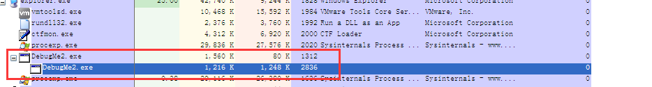
程序以父进程和以子进程运行分别有不同的行为时 自我创建技术才有意义 也就是说 借助该技术可以使同一可执行文件存在两种路径
如图所示，父进程用来在控制台( Console)窗口中输出字符串“This is a parentprocess!”,并运行子进程。而子进程则不同,在消息窗口中输出字符串“This is a child process!”。就像这样，我们借助自我创建技术可以在同一可执行文件中执行两种形式的行为动作。虽然有多种编程方法可以帮助我们实现这一目的，但为了增加调试难度，这里只介绍动态修改子进程EP地址的方法
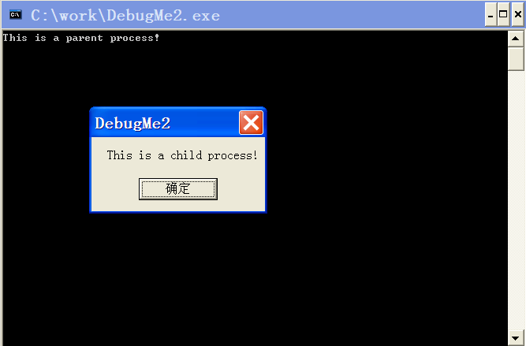
工作原理
原理如图
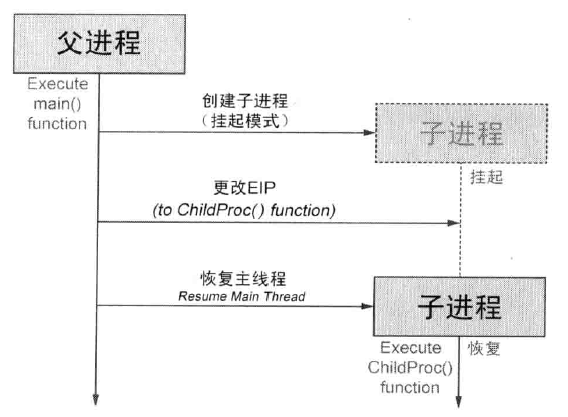
创建子进程（挂起模式）
父进程运行时，main()函数 就会被调用执行，以挂起模式创建子进程。子进程以挂起模式创建后，导出DLL被加载进来，但进程的主线程处于暂停状态(也称为“线程休眠”)。主线程是创建进程时默认创建的，其最主要的职能是运行EP代码。所以对处于挂起模式的进程来说,其主线程也处于暂停状态，EP代码未运行，且不会执行任何动作。
更改EIP
处于调试状态时 在调试器-被调试者关系中需要这样做 调试器通过修改API可以随意修改被调试进程的代码运行位置
父进程也采用类似方法随意修改子进程的代码运行地址 当前子进程的主线程处于暂停状态 先获取上下文 然后将EIP成员修改为指定地址即可
恢复主线程
最后 恢复运行（处于暂停状态的）子进程的主线程 接下来 主线程就会运行（我们修改过的）新地址的代码
示例程序源代码
1 | #include <windows.h> |
正常运行示例程序后, main（）函数会被调用执行，借助CreateProces（…CREATE SUSPEND,…)API采用挂起模式创建自身。新创建的子进程会加载所有导出DLL文件，但其主线程将处于暂停状态。返回CreateProcess() API后，与新进程相关的信息即被放入最后一个参数pi，变量pi是PROCESS INFORMATION结构体变量。
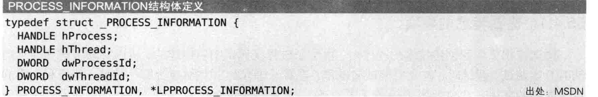
PROCESS_ INFORMATION结构体的hThread成员就是子进程的主线程句柄,通过该句柄即可随心所欲地控制相应线程。以hThread作 为参数调用GetThreadContext() API，即可获得线程的CONTEXT结构体，线程的所有信息都保存在该CONTEXT结构体中。
1 | typedef struct _CONTEXT |
EIP为CONTEXT结构体的Eip成员(指EIP寄存器),将该值修改为ChildProc()函数的地址,如下所示:
ctx.Eip = (DWORD ) ChildProc;
然后调用SetThreadContext() API,将修改后的CONTEXT结构体设置给子进程的主线程。最后，调用ResumeThread( API唤醒子进程的主线程，执行更改后的EIP指示的指令( =要执行的代码地址=ChildProc())。请注意，更改线程上下文是以上实现方法的核心
调试练习
需要注意的事项
调试应用了自我创建技术的程序时，由于子进程是调试中新创建的，所以必须考虑如何从启动时开始调试。调试时，首先要调试父进程，查看子进程的EP被修改为哪一地址, 然后利用第54章中介绍的方法(在EP地址处设置无限循环)，就能轻松解决这一问题。但是这里我们将采用新的调试方法一JIT ( Just-In-Time )调试法(从学习代码逆向分析技术的角度来说，尽量多接触各种调试方法是非常有好处的)。
JIT调试
JIT调试是指 运行中的进程发生异常时 OS会自动运行指定调试器附加发生异常的进程 由于可以从异常发生的位置开始调试 所以采用这种方式很容易把握出现异常的原因
设置JIT调试器
OD有个很方便的功能可以非常方便的将其本身设置为JIT调试器 在菜单栏选择OPtions-Just-in-time debugging
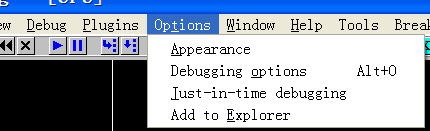
然后在弹出的框中选择：
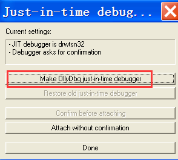
这样就成功注册为JIT调试器 从下面注册表的键值也可以看出来
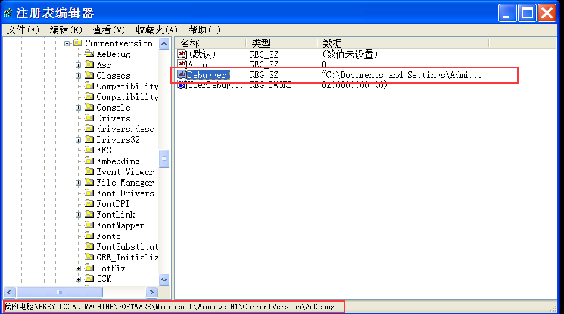
DebudMe2.exe
调试父进程
在OD中打开程序 运行到Main（）函数处 如图：
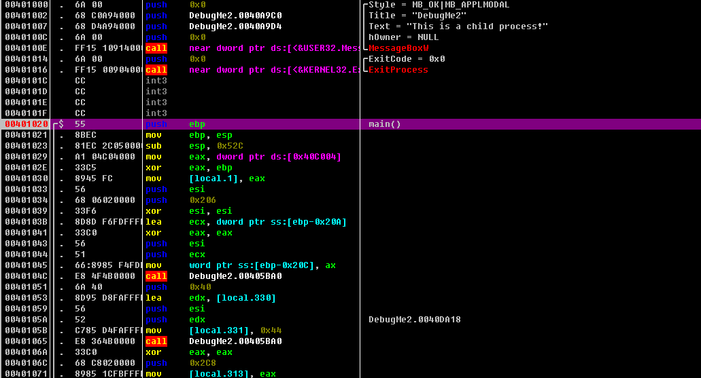
继续单步跟踪 看到了CreateProcess（）API代码处（位于401102处）
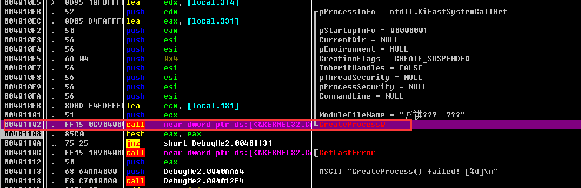
调用执行完401102地址处的CreateProcessW( API后，子进程即以挂起模式创建。继续调试会遇到调用GetThreadContext()/SetThreadContext() API的代码，如图55-11所示。这部分用来获取子进程的主线程的CONTEXT结构体,并将CONTEXT.Eip的值修改为ChildProcO函数地址。
需要特别关注下图中401186地址处的MOV [local.264],00401000指令,其中[local.264]地址即为CONTEXT.Eip,而401000是ChildProc()函数 的起始地址。
然后调用ResumeThread（pi.hThread）API启动子进程的主线程 再调用WaitForSingleObject（pi.hProcess,INFINITE）API进入等待状态 直到子进程终止运行
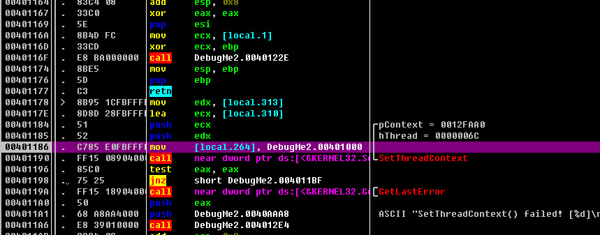
调试子进程
首先 用Stud_PE将VA形式的401000地址变换为文件偏移形式
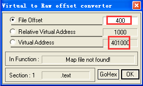
然后用HxD将文件偏移400处的一个字节修改为0xCC（原来为0x6A） 然后将修改后的文件保存
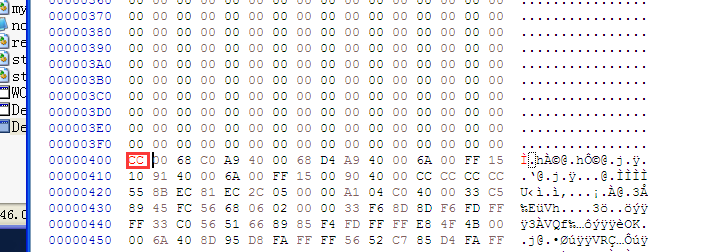
0xCC是长度为1个字节的IA-32指令，对应于INT3 (断点)指令。文件偏移0x400处的0xCC代码被执行时，就会触发EXCEPTION_ BREAK_ POINT异常。接下来，运行DebugMe2_ CC.exe程序，弹出异常对话框，如图所示。（这里说一下 刚才的以上是在XP环境下运行的 由于XP没得弹框 所以我换到了WIN7下 就ok了）
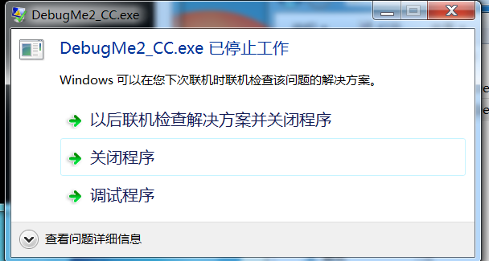
由于JIT调试器已经被注册到当前系统 所以异常对话框中显示“调试程序”按钮 单击
因为OD已经被注册为JIT调试器 所以它会被当前系统自动调试运行 并附加到DebugMe2_CC.exe进程 此时OD调试器中即可看到发生异常的代码
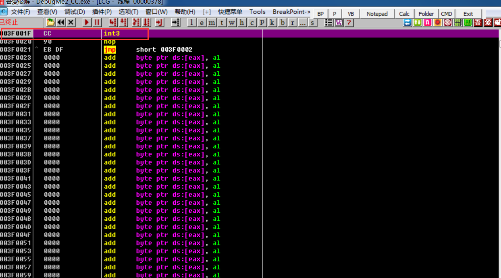
接下来 将401000地址处的0xCC代码恢复为原代码（0x6A）
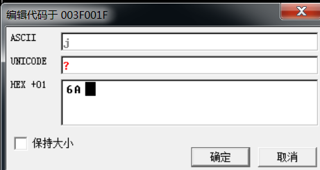
然后在正常代码中调试就ok了
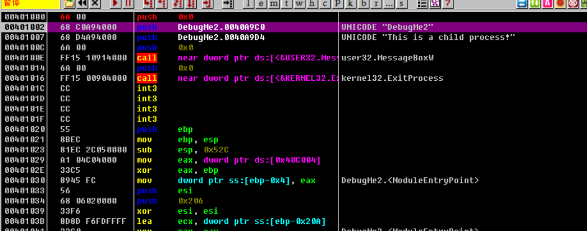
总结
介绍了自我创建技术，借助该技术,进程自身能以子进程形式运行，并可以修改起始代码的地址。然后讲解了通过JIT调试器调试这类进程的方法，采用的方法与上一章中介绍过的“设置无限循环”的方法非常类似。该方法相当有用,对付一些难以调试的进程时可以尝试